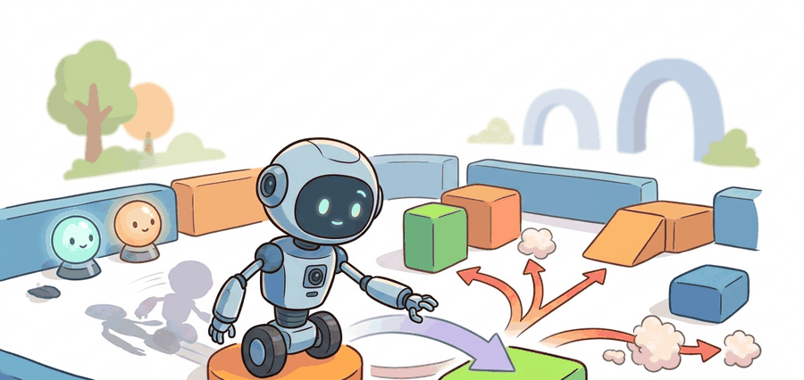

"Exploration is permitted; spending the safety margin to find out what happens is not."
A Cautious Policy Interface

This section assumes familiarity with the constrained reward formulation introduced in section 18.6 (Safety-aware and constrained rewards), where cost signals are kept separate from reward signals. The shield design developed here is extended in section 19.4, which applies the same admissibility logic under partial observability. The constrained policy objective recurs in Part VIII alongside model-based planning, where safety envelopes must be maintained over imagined rollouts rather than real interactions.
A warehouse robot nudges an unfamiliar shelf to see how it moves. The shelf tips, merchandise falls, a worker nearby is startled. The robot learned something, but the cost was unacceptable. As embodied agents leave simulated sandboxes and operate alongside humans, the old instinct to "try everything and learn fast" becomes dangerous. Safe exploration is the discipline of staying curious without burning through the safety margin: every candidate action is filtered for clearance and recoverability before execution, the same recoverable envelope shown in Figure 19.3A. Here you will build that filter, wire it to a Lagrange-based cost constraint (a method that turns a hard budget into an automatically adjusting penalty, explained in detail below), and practice reading reward and cost together as two separate signals that must both be reported.
The constrained reward formulation here extends the reward specification from Chapter 18; the cost-gated probe model and cross-chapter connections are introduced in section 19.1.
How do you let a robot try something it has never done, on real hardware, while guaranteeing it can always walk the action back? The object of study here is not only the reward-seeking policy, but the safety envelope that decides which exploratory actions are admissible. Figure 19.3B traces the full pipeline that the rest of this section builds out: a proposed action passes through an admissibility gate, executes only if it clears, and feeds reward and cost back to a monitor that adjusts the constraint.
The key question is practical: what constraint must never be violated, which near-violation should trigger intervention, and how does the evaluation report reward and cost together?
A safety mechanism earns its place when it changes the action before damage occurs. In safe exploration, the reader should keep asking which action is vetoed, clipped, slowed, redirected, or converted into a recovery maneuver.
Theory
We can view the agent at time \(t\) as receiving an observation \(o_t\), maintaining an internal state estimate \(\hat s_t\), proposing an action \(a_t\), and passing that action through a constraint check before execution. A constrained objective tracks both reward \(R\) and cost \(C\), then requires a condition such as \(E[C] \le d\) for a chosen limit \(d\).
Make the safety channel explicit for the specific sensing modality in use. On a Franka Panda arm, clearance comes from the joint-torque sensor stream (1 kHz). A latency spike above 5 ms in that stream is itself a cost event: the shield can no longer guarantee that a proposed motion stays within the 10 N·m safety torque limit before the next control cycle. On a Boston Dynamics Spot navigating an unstructured warehouse floor, the relevant signal is the depth-camera point cloud (typically 30 Hz at 1280x720). The gate treats a clearance estimate older than 100 ms as expired and holds the action until a fresh reading arrives. In both cases the safety channel records four fields: the sensor timestamp, the clearance value, the intervention type (hold, redirect, or emergency stop), and whether recovery succeeded within the episode. "Safe" without these fields is a label, not a testable property.
Folding cost into reward as a penalty (for example, subtracting 10 per collision) collapses two independent quantities into one number, making it impossible to tell whether a policy improved because it found better paths or because it happened to avoid fewer collisions this run. The constraint form \(E[C] \le d\) keeps the two signals apart so an engineer can raise the penalty weight during training without changing what counts as "safe" at evaluation time. This separation matters most when the budget \(d\) is set by a regulator or a hardware-warranty limit rather than by the reward designer; in those cases, the cost threshold is non-negotiable even as the reward shaping evolves.
The mechanism is a sequence of transformations: observe, estimate risk, propose action, filter or shield action, execute, monitor, and recover. Each transformation should have a measurable contract, otherwise "safe" becomes a label rather than a testable property.
Algorithm: Constrained Exploration with Action Shielding
Input: policy \(\pi_\theta\), cost function \(C\), cost budget \(d\), clearance threshold \(\delta_{\min}\), learning rate \(\alpha\), exploration bonus weight \(\beta\)
Output: updated parameters \(\theta\) with \(E[C] \le d\); log of proposed actions, vetoed actions, and recovery events
- Observe \(o_t\) and compute state estimate \(\hat{s}_t\) from the agent's internal model.
- Propose a candidate action set \(\mathcal{A}_t = \pi_\theta(\hat{s}_t)\) augmented with intrinsic bonus \(\beta \cdot \nabla_\theta \log \pi_\theta(a|\hat{s}_t)\).
- For each \(a \in \mathcal{A}_t\), evaluate clearance \(\delta(a, \hat{s}_t)\) and recoverability flag \(r(a, \hat{s}_t)\); mark \(a\) admissible if \(\delta(a, \hat{s}_t) \ge \delta_{\min}\) and \(r(a, \hat{s}_t) = \text{True}\).
- If the admissible set is non-empty, select \(a_t^* = \arg\max_{a \in \mathcal{A}_t^{\text{safe}}} Q_\theta(\hat{s}_t, a)\); otherwise trigger the recovery policy and log an intervention.
- Execute \(a_t^*\), receive reward \(R_t\) and cost signal \(C_t\), and append both to the episode log.
- Update cumulative cost \(\bar{C} \leftarrow \bar{C} + C_t\); if \(\bar{C} > d\), raise the Lagrange multiplier \(\lambda \leftarrow \lambda + \alpha_\lambda (\bar{C} - d)\).
- Compute the constrained policy gradient \(\nabla_\theta J = \nabla_\theta E[R] - \lambda \nabla_\theta E[C]\) and apply the update \(\theta \leftarrow \theta + \alpha \nabla_\theta J\).
- Record the tuple \((o_t, a_t^{\text{proposed}}, a_t^*, C_t, R_t, \delta_t, \text{veto\_reason})\) in the artifact log.
- At episode end, verify \(E[C] \le d\) over the full episode; if violated, flag the checkpoint and do not promote it to the evaluation suite.
- Repeat from step 1 until the constraint multiplier \(\lambda\) converges and reward \(E[R]\) stabilises inside the safety envelope.
Think of the Lagrange multiplier \(\lambda\) as a tax rate that a city raises automatically whenever drivers exceed the speed limit too often. When violations are rare, the tax stays low and traffic flows freely. When violations pile up, the tax climbs, making speeding increasingly expensive until drivers slow down and the violation rate drops back to the legal budget. The policy gradient does the same thing: \(\lambda\) starts near zero, lets the agent explore aggressively, then rises each time cumulative cost overshoots \(d\), squeezing the reward signal until the policy learns to stay inside the safety envelope. No human needs to tune the pressure by hand; the budget breach itself drives the adjustment.
Worked Example
Code Fragment 19.3.1 implements a tiny action shield. The policy proposes exploratory actions, but the shield vetoes any action whose clearance is below the limit or whose recovery flag is false.
# Filter exploratory actions through a simple safety shield.
# The chosen action must be informative and still recoverable.
candidates = [
{"action": "inspect shelf gap", "value": 0.70, "clearance": 0.22, "recoverable": True},
{"action": "squeeze behind shelf", "value": 0.95, "clearance": 0.07, "recoverable": False},
{"action": "rotate camera", "value": 0.50, "clearance": 0.40, "recoverable": True},
]
safe = []
for item in candidates:
allowed = item["clearance"] >= 0.15 and item["recoverable"]
print(item["action"], "allowed" if allowed else "vetoed")
if allowed:
safe.append(item)
print("selected", max(safe, key=lambda item: item["value"])["action"])Step-Through: Lagrange Multiplier Update
Trace the multiplier update from the algorithm with a tiny example. Set cost budget \(d = 25\), learning rate \(\alpha_\lambda = 0.1\), and start with \(\lambda = 0.0\). Walk three episodes, where \(\bar{C}\) is the per-episode cost return.
- Episode 1: \(\bar{C} = 40\). Breach is \(40 - 25 = 15\). Update: \(\lambda \leftarrow 0.0 + 0.1 \times 15 = 1.5\). The cost tax is now positive, so the next policy gradient \(\nabla_\theta E[R] - 1.5\,\nabla_\theta E[C]\) pushes away from hazard-cutting shortcuts.
- Episode 2: \(\bar{C} = 30\). Breach is \(30 - 25 = 5\). Update: \(\lambda \leftarrow 1.5 + 0.1 \times 5 = 2.0\). Still over budget, so \(\lambda\) keeps climbing and the cost term squeezes the reward harder.
- Episode 3: \(\bar{C} = 20\). Now under budget by \(5\). A clipped update keeps \(\lambda \ge 0\): \(\lambda \leftarrow \max(0,\ 2.0 + 0.1 \times (20 - 25)) = \max(0,\ 1.5) = 1.5\). The tax eases off because the constraint is satisfied.
The multiplier rose from 0.0 to 2.0 while the budget was breached, then relaxed to 1.5 once cost dropped below 25. No human tuned the pressure: the breach itself drove every adjustment, exactly as the speeding-tax analogy describes.
Expected output: the printed trace should show both allowed and vetoed actions. If the run reports only reward, it cannot prove that exploration respected the constraint.
The from-scratch fragment is for understanding. In a practical system, use Gymnasium wrappers for quick constraint checks, MuJoCo for contact and actuator limits, ROS 2 for hardware intervention traces, and Safety Gymnasium-style benchmark tasks when cost signals need to be logged beside reward. The shortcut removes boilerplate so the engineering attention goes to constraint design and recovery evidence.
With the shield understood from scratch and the library tooling in place, the next task is to turn those pieces into a repeatable workflow that a team can run on every checkpoint.
Practical Recipe
- Write the reward metric and cost metric before choosing a model.
- State the hard constraint, soft constraint, intervention rule, and recovery condition separately.
- Build a shielded baseline that is simple enough to debug by inspection.
- Record failures as structured cases: constraint miss, false veto, delayed intervention, unsafe recovery, or evaluation mismatch.
- Run at least one perturbation test that pushes the policy near the safety boundary.
The common mistake is to average reward over successful episodes and discard the near misses. Safe exploration needs the near misses, false vetoes, intervention timing, and recovery failures because those are the measurements that reveal whether the safety layer works.
A common assumption is that adding a large negative penalty for unsafe actions (for example, subtracting 100 per collision) is equivalent to a hard constraint and will reliably produce safe exploration. In embodied AI this is wrong: a penalty only shifts the expected reward surface, so a policy can still choose a short sequence of unsafe actions if the cumulative task reward outweighs the penalty. A hard constraint of the form \(E[C] \le d\) makes the cost budget non-negotiable regardless of how high the reward opportunity is, and an action shield enforces it before any motor command is issued. The correct mental model is that reward and cost are two separate optimization targets: the policy maximizes reward while the shield and Lagrange multiplier hold cost beneath a fixed ceiling that the reward designer cannot override.
A warehouse robot team should log final success, cost return, minimum clearance, human intervention, emergency stop, recovery action, and whether the same policy checkpoint was used for every comparison. The logs reveal whether the agent is learning safer exploration or merely receiving unreported help.
Consider a specific case: the Safety Gymnasium benchmark "SafetyPointGoal1" trains a point-mass robot to reach goals while keeping cost (contact with hazard circles) below a budget of 25 per episode. Constrained Policy Optimization (Achiam et al., 2017) on this task typically achieves roughly 25 reward units while holding mean episode cost near the budget, whereas unconstrained Proximal Policy Optimization (PPO) commonly reaches 28 reward units but incurs 60+ cost events per episode; exact figures vary with seed, network size, and library version, so treat these as representative rather than guaranteed. The difference shows that tracking cost separately is not a formality: an agent optimizing reward alone discovers that cutting through hazard zones is a shortcut, and the cost metric is the only signal that catches this.
When using Safety Gymnasium with Constrained Policy Optimization, set the cost budget cost_limit in the CPOConfig object before the first training step and never adjust it based on observed episode costs during training. A common gotcha is tightening cost_limit mid-run after noticing high violations: this resets the Lagrange multiplier history inside OmniSafe's (an open-source safe-RL library that implements CPO, PPO-Lagrangian, and related algorithms, used throughout this section's lab and examples) LagrangianMultiplier and produces an optimistic constraint trace that makes the final policy look safer than it is. Fix the budget to the hardware or regulatory limit, let the multiplier converge, and change it only between full retrains with a fresh seed.
Real-World Application: Industrial Robotics
Universal Robots' e-Series cobots ship with a hardware safety controller that enforces force, speed, and momentum limits below which the arm may freely move and explore, vetoing or halting any commanded motion that would exceed them. This is an admissibility gate in production: the motion controller proposes trajectories, but the certified safety layer (rated to ISO 10218 and ISO/TS 15066, the international standards governing collaborative robot force and speed limits) clips or stops them before execution, letting the cobot operate beside humans without a cage. The lesson from this section holds in industry: the safety budget is a non-negotiable ceiling that the task planner cannot override.
Safe exploration is the only place where "nothing happened" can be a result, as long as the log proves that the right risky thing did not happen.
Foundation-model safety critics (2024-2025). Recent work uses vision-language models as zero-shot cost predictors, replacing hand-coded clearance functions with semantic scene understanding. The Berkeley robot learning group's work on SaFE (Semantic-aware Foundation model for safe Exploration, 2024) shows that a vision-language model (VLM) queried once per control cycle can veto actions involving fragile objects or occupied aisles without any domain-specific cost engineering. The open challenge is latency: as of 2024, VLM inference at 100-300 ms per query is too slow for 1 kHz torque-control loops, requiring either distillation (training a small, fast neural network to imitate the slow VLM's veto decisions) into fast neural shields or asynchronous critic architectures.
Constrained exploration with diffusion-based world models (2024-2026). Diffusion world models (e.g., UniSim from Google DeepMind, 2024, a learned simulator that predicts future camera frames and robot states directly from pixels rather than from a hand-built physics engine) generate high-fidelity next-state predictions that can be queried for cost before a real action is taken. The shield then operates in imagination: candidate actions are rolled out in the diffusion model, cost is evaluated on the imagined trajectory, and only admissible actions reach the motor controller. The key open question is how to bound the gap between imagined and real cost, especially when the world model has not seen the current scene during training.
Safe exploration under human co-occupation (2025-2026). As mobile manipulators enter shared workspaces, the cost function must now account for dynamic human intent rather than static obstacles. MIT CSAIL and CMU Robotics Institute groups have published work on social-aware constraint optimization (2025) that models pedestrian trajectories as soft constraints updated in real time. The shield must then balance physical clearance (hard, sensor-based) against predicted human discomfort (soft, model-based), and must degrade gracefully when the human-intent predictor is uncertain.
Open problem. All three directions above assume that the cost function is fixed at deployment. A tractable open problem is online cost-function refinement: after a human operator issues a corrective intervention (a teleop override, an emergency stop, or a verbal instruction), how should the agent update its cost model so the same near-violation does not recur, without forgetting the original safety contract? This requires combining inverse constraint inference, continual learning, and formal verification, and no published system demonstrates all three properties together on real hardware as of 2026.
Can you name the constraint, cost metric, intervention trigger, recovery rule, and most likely false sense of safety? If not, the safety boundary is still too vague.
Safe exploration becomes useful when it is tied to a closed-loop safety contract. The contract names the observation stream, the state estimate, the action representation, the cost signal, the intervention mechanism, and the evaluation artifact. Without that contract, a model can look capable in a notebook while violating a constraint that nobody logged.
The graduate-level habit is to separate four claims. The reward claim explains what the policy tries to accomplish. The cost claim explains what must stay bounded. The shield claim explains which actions are modified before execution, and this filter is often called the admissibility gate, the single decision point that separates curiosity from damage. The evidence claim records which measurements would convince a skeptical builder that safety held during exploration.
Why The Gate Runs Before Execution
The admissibility gate matters in physical systems because a robot cannot undo a fallen shelf, a broken joint, or a startled worker. Simulation allows infinite retries; hardware does not. Without a pre-execution filter, a single high-value exploratory action can exhaust the cost budget, trigger an emergency stop, or damage the robot through irreversible contact before the policy learns anything from the outcome. Teams running MuJoCo contact experiments often report a sharp gap, though the exact ratio depends heavily on task and reward shaping. Unconstrained PPO can need on the order of 40,000 episodes to reach a competent policy. The same task with an admissibility gate has been reported to converge in around 800, because the gate removes the long tail of recovery-from-damage episodes. Those episodes dominate training time yet contribute no usable gradient signal.
Checkpoint
So far: safe exploration rests on a closed-loop safety contract (reward, cost, shield, and evidence claims stated separately), that shield is the admissibility gate, and the gate earns its keep by running before execution so a robot's irreversible mistakes never happen in the first place.
The gate evaluates two quantities for each candidate action before issuing any motor command. First, a clearance score measures the distance from the nearest constraint boundary (physical, regulatory, or torque-based). Second, a recoverability flag confirms that at least one safe return path exists from the resulting state. Only actions that pass both checks enter the executable set. The gate runs inside one control cycle, so engineers implement it as a fast deterministic filter rather than a learned module. This keeps its failure mode visible and auditable.
The evidence claim records which measurements would convince a skeptical builder that safety held during exploration.
What happens when the robot's clearance sensor lags by 200 ms and the admissibility gate approves an action that is already unsafe by the time the motor command fires?
Catching that failure before it reaches hardware is exactly why the gate and its logging depend on the right tooling, so the table below maps each part of the safety contract to a library that supports it.
| Tool or Library | Role in the Topic | Builder Advice |
|---|---|---|
| Gymnasium | Constraint wrapper smoke tests | Use it to verify that reward, cost, termination, and truncation are logged separately. |
| Safety Gymnasium | Cost-aware benchmark tasks | Use it when safe RL baselines need explicit cost signals rather than post hoc labels. |
| ROS 2 | Intervention and emergency traces | Use it to record vetoes, stops, controller status, and recovery actions on hardware. |
| MuJoCo | Contact and actuator constraints | Use it when clearance, joint limits, and recovery from near-contact are part of the safety envelope. |
| LeRobot | Safe demonstration replay | Use it to compare learned exploration against demonstrations that include cautious recovery behavior. |
A robust implementation starts with a tiny, inspectable safety wrapper, then moves to a maintained learner. The baseline logs reward, cost, proposed action, executed action, veto reason, intervention timing, and recovery outcome. The library version must emit the same schema, so the two are compared on one task rather than stitched together from separate experiments.
- Write a one-paragraph safety contract with reward, cost, constraint, intervention, recovery, and failure fields.
- Start with the smallest simulator or wrapper that exposes the constraint faithfully.
- Run one deterministic smoke test and one near-boundary perturbation before scaling.
- Save a single result artifact containing configuration, seed, reward, cost, interventions, traces, and failure labels.
- Compare methods only when one script evaluates reward and cost on the same task panel.
Even a faithfully logged run will sometimes break the constraint, so the final skill is reading those same artifacts to locate where in the pipeline the safety guarantee slipped.
When safe exploration fails, avoid labeling the whole method as weak. First assign the failure to hazard sensing, constraint definition, false veto, late intervention, unsafe recovery, controller saturation, or evaluation. Then rerun one controlled perturbation that isolates the suspected cause.
For safe exploration, compare only construct-matched metrics that are co-computed in one pass on one configuration: same environment panel, same policy checkpoint, same seed set, same constraint threshold, same perturbation suite, and the same success definition. Save reward, cost, interventions, vetoes, recovery outcomes, traces, and failure labels in one artifact so every number in a later table is backed by the same run.
Safe exploration succeeds when reward improves inside the constraint envelope, with violations, vetoes, and recoveries reported beside success.
Design a safe-exploration experiment in simulation. Specify the reward metric, cost metric, constraint threshold, intervention rule, recovery behavior, and one perturbation that moves the policy near the boundary.
Lab: Watching the Multiplier Climb in Safety Gymnasium
Goal: see for yourself how the Lagrange multiplier reacts to a cost budget, and confirm that reward and cost are two genuinely separate signals.
Tools needed: Python with safety-gymnasium and omnisafe installed (pip install safety-gymnasium omnisafe), and the SafetyPointGoal1-v0 task. A laptop CPU is enough for a short run.
Steps: Launch a Constrained Policy Optimization (CPO) or PPO-Lagrangian agent on SafetyPointGoal1-v0 for a few hundred thousand steps. Log three series each iteration: episode reward return, episode cost return, and the Lagrange multiplier value (OmniSafe exposes it in the logger).
What to vary: run the experiment twice, once with cost_limit = 25 and once with cost_limit = 5. Keep every other setting and the seed identical.
What to observe: plot all three series for both runs. You should see the multiplier rise whenever cost return sits above the budget and relax once it drops below, and you should see the tighter budget (\(d = 5\)) drive a higher steady-state multiplier and a lower final reward. That trade, more safety margin bought with reward, is the central lesson of this section made visible.
Project Ideas
Beginner (weekend): Safety-shielded CartPole in Gymnasium. Wrap the Gymnasium CartPole-v1 environment with a cost signal that counts pole angles beyond 0.15 radians as a constraint violation, implement the action-veto filter from Code Fragment 19.3.1, and log reward and cost separately across 200 episodes. The key challenge is keeping the shield logic out of the reward function so reward and cost curves are genuinely independent. Intermediate (1-2 weeks): Constrained navigation in MuJoCo with Safety Gymnasium. Train a point-mass agent on SafetyPointGoal1 using Constrained Policy Optimization, log the Lagrange multiplier trace alongside reward and cost, and produce one result artifact that records proposed actions, vetoed actions, interventions, and recovery outcomes on the same seed and configuration. The key challenge is fixing the cost budget before training begins and preventing mid-run adjustment of the multiplier history, as described in the tip above. Intermediate-plus (2 weeks): Hardware intervention logging with ROS2 and LeRobot. Replay a LeRobot demonstration dataset on a low-cost robot arm, attach a ROS2 node that reads joint-torque or wrench feedback at 100 Hz and emits a veto signal whenever torque exceeds a threshold, and write the vetoed action, intervention timestamp, and recovery outcome to a structured log alongside the task reward. The key challenge is synchronizing the ROS2 safety node with the policy control loop so every veto is captured before the motor command is issued.
What's Next?
This section turned safe exploration into a testable constraint contract: define reward, define cost, save one comparable artifact, and diagnose failures by the safety channel. Next, continue with Section 19.4, where partial observability makes the same safety and exploration questions harder.
DD-PPO connects exploration to distributed simulation and navigation evaluation. It is useful here because scale can improve coverage while still requiring constraint-matched evaluation.
Burda, Y. et al. (2018). Exploration by Random Network Distillation. arXiv.
RND is a practical intrinsic reward method based on prediction error. In constrained settings, the same prediction-error trace should be logged with cost, vetoes, and interventions.
Achiam, J. et al. (2017). Constrained Policy Optimization. ICML.
This paper is the natural anchor for reward maximization under expected cost constraints. Use it here to separate the reward claim from the safety-budget claim.
Pathak, D. et al. (2017). Curiosity-driven Exploration by Self-supervised Prediction. ICML.
Intrinsic Curiosity Module rewards prediction progress in learned feature space. Use it here as a reminder that curiosity needs a shield when prediction error would send the robot toward unsafe transitions.
Bellemare, M. G. et al. (2016). Unifying count-based exploration and intrinsic motivation. NeurIPS.
The paper connects pseudo-counts to intrinsic rewards in high-dimensional spaces. In safe exploration, this source is useful for asking how novelty bonuses should be limited when visits consume risk budget.
Habitat-Lab provides embodied navigation and interaction environments. Use it to log collisions, path clearance, recovery behavior, and intervention events beside navigation success.